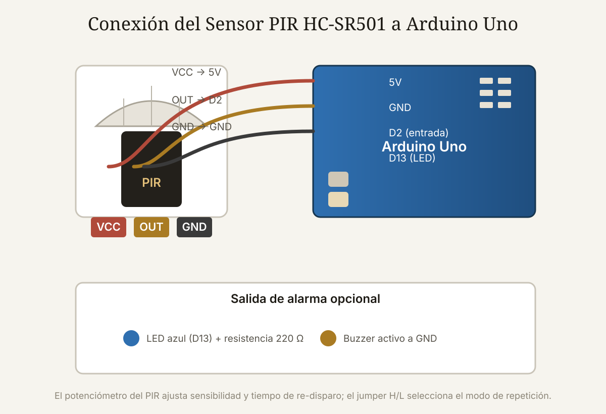

Qué cubre esta guía
- Cómo funciona el infrarrojo pasivo
- Especificaciones del HC-SR501
- Los dos potenciómetros y el jumper
- Conexión al Arduino
- Código: detección con LED y buzzer
- Modo re-trigger y temporización en código
- Alarma de seguridad casera
- Falsos positivos y ubicación
- Problemas comunes y soluciones
- Preguntas frecuentes
Cómo funciona el infrarrojo pasivo
El sensor PIR (Passive Infrared) detecta movimiento midiendo los cambios en la radiación infrarroja que emite todo cuerpo caliente. A diferencia de un sensor ultrasónico, el PIR no emite nada: es pasivo. En su interior hay un sensor piroeléctrico y, delante, una lente facetada —la cúpula blanca— que divide el campo de visión en múltiples zonas.
Cuando una fuente de calor, como una persona, se mueve cruzando de una zona a otra, el sensor percibe un cambio rápido de radiación infrarroja y genera un pulso en su salida. Esta es la razón de una característica práctica importante: el PIR detecta mejor el movimiento transversal (cruzar su campo de visión) que el acercamiento frontal directo.
Especificaciones del HC-SR501
| Parámetro | Valor |
|---|---|
| Voltaje de alimentación | 5 – 20 V (típico 5 V) |
| Rango de detección | 3 – 7 m (ajustable) |
| Ángulo de detección | ~110° (horizontal) |
| Tiempo de salida | 0.5 – 200 s (ajustable) |
| Salida | Digital (alto al detectar) |
Los dos potenciómetros y el jumper
El módulo tiene dos potenciómetros y un jumper que conviene entender antes de programar:
- Potenciómetro de sensibilidad: ajusta la distancia de detección (aprox. 3 a 7 metros). Girarlo al máximo amplía el rango, pero también aumenta los falsos positivos.
- Potenciómetro de tiempo: controla cuánto permanece la salida en alto tras detectar movimiento (aprox. 0.5 a 200 segundos).
- Jumper H/L: en posición L, el sensor se re-dispara con cada movimiento detectado; en posición H, mantiene la salida activa mientras haya movimiento continuo.
millis() en el Arduino. Así tienes control total y puedes hacer parpadear una luz o sonar la alarma por un tiempo fijo.Conexión al Arduino
HC-SR501 Arduino Uno
-------- -----------
VCC --> 5V
OUT --> Pin digital 2
GND --> GNDLa salida OUT es digital: entrega HIGH cuando detecta movimiento y LOW cuando no. La lectura es tan simple como un digitalRead(), sin librerías ni componentes adicionales.
Código: detección con LED y buzzer
const int PIN_PIR = 2; // salida del sensor
const int PIN_LED = 13; // LED indicador
const int PIN_BUZZER = 8; // buzzer activo de alarma
void setup() {
pinMode(PIN_PIR, INPUT);
pinMode(PIN_LED, OUTPUT);
pinMode(PIN_BUZZER, OUTPUT);
Serial.begin(9600);
}
void loop() {
int movimiento = digitalRead(PIN_PIR);
if (movimiento == HIGH) {
Serial.println("Movimiento detectado");
digitalWrite(PIN_LED, HIGH);
digitalWrite(PIN_BUZZER, HIGH);
delay(2000); // suena 2 segundos y se apaga
digitalWrite(PIN_LED, LOW);
digitalWrite(PIN_BUZZER, LOW);
} else {
digitalWrite(PIN_LED, LOW);
digitalWrite(PIN_BUZZER, LOW);
}
delay(100);
}Este es el esqueleto de cualquier proyecto de seguridad: detectar, alertar y registrar. A partir de aquí puedes agregar un módulo Bluetooth para avisar al celular, o combinar con el sensor MQ-2 para una alarma de intrusión + gas.
Modo re-trigger y temporización en código
Si en lugar de sonar un tiempo fijo quieres que la alarma permanezca activa mientras haya movimiento, y se apague después de un tiempo sin detección, la técnica es usar millis() para medir cuánto ha pasado desde la última detección:
const int PIN_PIR = 2;
const int PIN_LED = 13;
const unsigned long TIEMPO_APAGADO = 5000; // apaga 5 s despues del ultimo movimiento
unsigned long ultimoMovimiento = 0;
void setup() {
pinMode(PIN_PIR, INPUT);
pinMode(PIN_LED, OUTPUT);
Serial.begin(9600);
}
void loop() {
if (digitalRead(PIN_PIR) == HIGH) {
ultimoMovimiento = millis(); // actualiza la marca de tiempo
digitalWrite(PIN_LED, HIGH);
}
// Si paso suficiente tiempo sin movimiento, apaga
if (millis() - ultimoMovimiento > TIEMPO_APAGADO) {
digitalWrite(PIN_LED, LOW);
}
delay(50);
}Este patrón es reutilizable para luces automáticas de pasillo, ventiladores que se encienden al detectar presencia o contadores de eventos con marca de tiempo.
Alarma de seguridad casera
Para convertir el detector en una alarma de seguridad mínima, combina el PIR con un buzzer, un LED y, si quieres, el módulo Bluetooth HC-05 para recibir el aviso en el celular:
- PIR en la zona a vigilar, apuntando a la puerta o pasillo de ingreso.
- Buzzer y LED como alerta local inmediata.
- HC-05 (opcional) para enviar un mensaje al celular con la guía de Bluetooth.
- Alimentación estable: si la alarma debe funcionar de forma continua, usa una fuente de 5V regulada en lugar de solo el USB del computador.
Falsos positivos y ubicación
- Evita el sol directo y las ventanas: los cambios de luz solar sobre el campo de visión alteran la radiación infrarroja y disparan el sensor.
- Lejos de fuentes de calor: estufas, calefactores y corrientes de aire caliente generan falsas detecciones.
- Altura y ángulo: monta el sensor a la altura del cuerpo, apuntando a una zona de paso transversal para maximizar la detección real.
- Filtro en software: exige que la detección se mantenga un tiempo mínimo antes de activar la alarma, para descartar disparos aislados.
Problemas comunes y soluciones
| Síntoma | Causa probable | Solución |
|---|---|---|
| No detecta nada | Sensibilidad al mínimo o cableado invertido | Subir sensibilidad y verificar VCC/OUT/GND |
| Se dispara sin nadie | Sol, calor o sensibilidad alta | Reubicar el sensor y bajar sensibilidad |
| Detecta tarde o solo de cerca | Movimiento frontal directo | Orientar para captar movimiento transversal |
| La salida queda en alto mucho tiempo | Potenciómetro de tiempo al máximo | Reducir el tiempo o gestionarlo en código |
| Detección intermitente | Alimentación inestable | Usar 5V estable y condensador de 100 µF |
Conclusión
El sensor PIR es la forma más rápida de darle a un Arduino la capacidad de "saber que hay alguien": tres pines, una lectura digital y un mundo de aplicaciones de seguridad y domótica. Ajusta sensibilidad y tiempo con criterio, ubícalo lejos del sol y del calor, y filtra los disparos en el código, y tendrás una alarma casera confiable. Para completar el sistema, combínalo con el detector de gas MQ-2 y revisa la Guía Esencial de Sensores para Arduino.
Preguntas frecuentes
¿Cómo detecta movimiento el sensor PIR?
El sensor PIR (Passive Infrared) detecta movimiento midiendo los cambios en la radiación infrarroja que emite todo cuerpo caliente. No emite nada por sí mismo —es pasivo—, sino que usa un sensor piroeléctrico y una lente facetada (la cúpula blanca) que divide el campo de visión en zonas. Cuando una fuente de calor, como una persona, cruza de una zona a otra, el sensor percibe un cambio rápido de radiación infrarroja y genera un pulso en su salida. Por eso detecta mejor el movimiento transversal (cruzar el campo) que el acercamiento frontal directo.
¿Qué ajustan los dos potenciómetros del HC-SR501?
El módulo HC-SR501 tiene dos potenciómetros: uno de sensibilidad y otro de tiempo. El de sensibilidad controla la distancia de detección, que puede ir aproximadamente de 3 a 7 metros, ajustando el umbral a partir del cual se considera que hubo movimiento. El de tiempo controla cuánto permanece la salida en alto después de detectar movimiento, típicamente entre 0.5 y 200 segundos. Además hay un jumper que selecciona el modo: en posición L el sensor se re-dispara con cada movimiento; en posición H mantiene la salida activa mientras haya movimiento.
¿Por qué mi sensor PIR se dispara solo sin que haya nadie?
Los disparos falsos del PIR tienen causas conocidas: la exposición directa al sol o a corrientes de aire frío o caliente (que cambian la radiación infrarroja del fondo), la proximidad a fuentes de calor como estufas o ventanas por donde entra el sol, animales pequeños o insectos que cruzan el campo, y un ajuste de sensibilidad demasiado alto. Las soluciones son ubicar el sensor lejos de ventanas y fuentes de calor, bajar la sensibilidad con el potenciómetro, montarlo a una altura adecuada apuntando a una zona de paso, y exigir en el código que la detección se mantenga un tiempo mínimo antes de activar la alarma.
¿Cuánto dura la salida en alto del sensor al detectar movimiento?
La duración de la salida en alto se ajusta con el potenciómetro de tiempo del módulo, que típicamente permite configurar desde 0.5 segundos hasta unos 200 segundos. Si necesitas controlar el tiempo de activación con precisión desde el Arduino, puedes poner el potenciómetro al mínimo y gestionar la temporización en el código con millis(), lo que además te da la flexibilidad de hacer parpadear una luz, sonar una alarma por un tiempo fijo o registrar eventos con marca de tiempo.
¿Qué proyectos de seguridad puedo construir con un PIR?
Con un sensor PIR y un Arduino puedes construir una alarma de intrusión que suene al detectar movimiento, una luz automática que se enciende al entrar a una habitación y se apaga tras un tiempo, un contador de personas que pasa por una puerta, un timbre de aviso para comercios, o un sistema de registro que guarde las horas en que hubo movimiento. Combinado con el sensor MQ-2 de gas y con un módulo Bluetooth, el PIR es la pieza central de un sistema de seguridad casero completo, como se describe en esta guía.
Este artículo es contenido editorial independiente: no contiene ubicaciones patrocinadas ni enlaces de afiliado. Si en futuras actualizaciones se agregan enlaces a proveedores de componentes, serán identificados explícitamente. Este proyecto es educativo y no reemplaza un sistema de alarma certificado. El código y las conexiones son referenciales; verifica la normativa y seguridad vigentes. Si detectas un error en esta guía, por favor avísanos.
Sigue aprendiendo
Complementa la alarma con el Detector de Gas con Sensor MQ-2 y repasa los fundamentos en la Guía Esencial de Sensores para Arduino.
Fuentes primarias y lecturas recomendadas
Referencias que sustentan los conceptos generales de la guía. Los rangos exactos pueden variar según el fabricante del módulo.
- Arduino Reference — digitalRead()
- Arduino Reference — Función millis()
- All About Circuits — Referencia técnica de electrónica básica
Enlaces revisados: 13 de agosto de 2026.